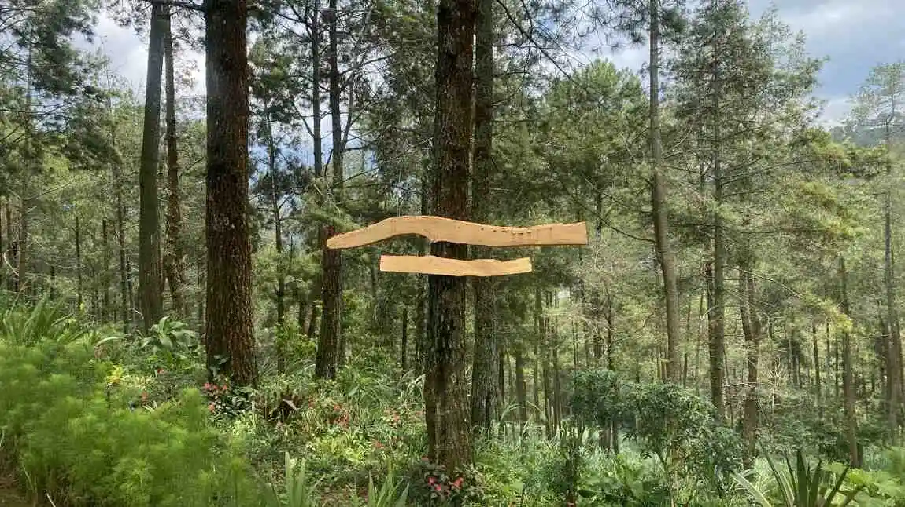

Lembur semalaman di belakang layar monitor, kemacetan tiada henti di jalan arteri, hingga notifikasi surel yang terus berdering. Inilah racun realitas modern yang membikin _burnout_ tingkat akut. Di ambang kejenuhan tersebut, pelarian sejenak ke pegunungan bukan lagi opsi—melainkan kebutuhan darurat.
Kawasan pegunungan Batu Malang—dengan suhu sejuk di bawah 20 derajat Celsius pada pagi hari dan hamparan tajuk pinus yang tak terbatas—menyimpan getaran elektromagnetik purba yang secara medis terbukti menyeimbangkan kortisol (hormon stres). Kegiatan *Mindfulness Meditation* di area alami seperti ini memegang kunci pemulihan performa pikiran Anda.
"Berhentilah mencoba mengubah sekeliling Anda; cukup leburkan keberadaan Anda dengan angin gunung, dan saksikan bagaimana pikiran meresponsnya dengan tenang." - Adiel Ebert
1. Mengembalikan Sinkronisasi Irama Sirkadian
Paparan cahaya lampu neon dan *blue light* layar _smartphone_ menipu otak Anda untuk terjaga selamanya. Jika dibiarkan berbulan-bulan, stres ini meluluhlantakkan imunitas saraf.
1.1 Cahaya Terapi Matahari Terbit
Dengan berkemah dan memutuskan meditasi sesaat pasca matahari terbit (Sunrise) di Batu Malang, ritme siklus tidur dan bangun Anda (Irama Sirkadian) direkalibrasi layaknya pengaturan ulang komputer (*factory reset*). Pendaran alami ungu dan jingga perlahan merilis serotonin murni tanpa suplemen pil tambahan apa pun.


2. Latihan Meditasi Singkat Anti Repot
Anda tak perlu menjadi praktisi spiritual tingkat lanjut untuk merasakan faedahnya. Meditasi tak sama dengan "mengosongkan pikiran", melainkan berlatih "sadar akan kehadiran".

2.1 Teknik '5-4-3-2-1 Grounding'
Cobalah duduk tegak di depan tenda Anda dan perhatikan: Sebutkan perlahan 5 warna daun yang terlihat, rasakan 4 benda yang bisa Anda raba dari tekstur batang kayu, degar 3 suara beda (burung gereja, desiran dahan ketiup angin, kresek rerumputan), hirup 2 jenis aroma spesifik embun pagi, dan rasakan 1 tarikan napas penuh. Teknik *grouding* ini luar biasa ampuh membius _panic attack_.

3. Tiga Aturan Wajib 'Detox' Pikiran
Supaya meditasi ini sukses 100 persen, campakkan pantangan berikut ini selama Anda menginjak area _healing_.
Pertama, Matikan alarm jam konvensional. Biarkan alam menstimulasi Anda terbangun secara mandular.
Kedua, Pasang mode terbang (Airplane Mode). Internet adalah penyulut adrenalin paling jahat di alam merdeka ini.
Ketiga, Jangan pernah mencemaskan pekerjaan kantor esok hari. Anggap saja kehidupan selain di atas rumput ini berhenti berputar secara magis.

4. FAQ Seputar Retret Meditasi Mandiri
5. Kesimpulan
Tubuh kita bukanlah rakitan mesin hidrolik yang dapat dieksploitasi terus-menerus atas nama ambisi karir metropolis. Meditasi luar ruangan (Nature Meditation) merupakan sarana pengurasan racun perihal kecemasan hidup.
Manfaatkan luasnya *Camping Ground* asri di Batu Malang untuk me-reset klem leher yang menegang kaku berbulan-bulan. Berbelanja perpaduan teknik tarikan dada dan atmosfer asri bukan melulu tindakan buang waktu liburan santai, melainkan sebuah pertahanan intelektual berintegritas demi karir lebih baik seusai turun gunung esok senja.
Adiel Ebert Nakula Shandy
Spesialis rancang bangun kawasan kamp terapi holistik. Mendampingi para pencari sepi menembus lapisan lelah mental lewat _Forest Bathing_ dan kemah senyap.